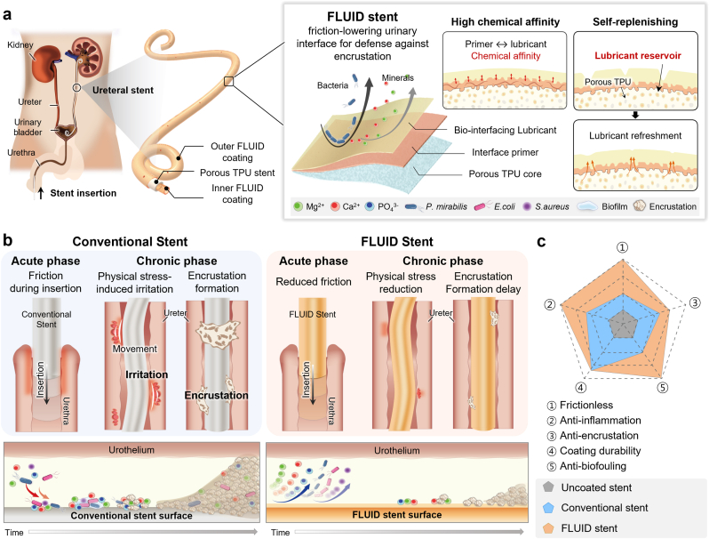

Research context and placement
A lubricated ureteral-stent interface addresses bacteria, encrustation and irritation, directly fitting device–host interaction.
Research background
A ureteral stent faces both insertion/removal friction and fouling during residence. A liquid interface can deter initial attachment, but depletion threatens that protection. FLUID connects surface lubrication to lubricant storage within the stent wall.
Approach and advances
A primer-stabilized silicone interface is coupled to a porous TPU reservoir that replenishes local depletion. The mechanism principally maintains an attachment-resistant surface rather than killing bacteria. Prevention of initial adhesion and removal of mature biofilms are different endpoints.

FLUID ureteral-stent lubricant storage and design comparisons during insertion and indwelling.
Yejin Jo, Yeontaek Lee, Sungun Bang et al.. “Lubricious anti-adhesive interface prevents friction, biofilm, and encrustation in long-term indwelling ureteral stents”. Figure 1. DOI: 10.1016/j.mtbio.2026.103405. CC BY 4.0. Public original image copied byte-for-byte, with no resizing, cropping, annotations or re-encoding.
Source figure and caption ↗ · DOI: 10.1016/j.mtbio.2026.103405 ↗ · CC BY 4.0 ↗
Evaluation and conditions
Artificial-ureter pull-out tests assess functional friction; porcine implantation assesses tissue response and deposits. Tria was fixed on the left and FLUID on the right, with three pigs per duration. This paired design reduces animal variation but does not remove laterality effects.
Key findings
Reported friction and early-attachment results support the lubrication strategy. Calcium/magnesium differences were significant at four weeks, not eight. Both groups lacked distinct biofilms in the sterile porcine study, which cannot establish infection prevention by itself.
Limits and open questions
In-vitro friction preconditioning differed between FLUID and comparators, so numeric comparisons require that context. Lubricant biodistribution and elimination remain unquantified. Infected long-term conditions and human outcomes require further evidence.
Related external research
A bioinspired omniphobic surface coating on medical devices prevents thrombosis and biofouling
Unlike the comparator's surface-tethered fluorinated liquid film, FLUID designs a replenishing reservoir within the wall.
Blood thrombosis and urinary mineral/biofilm endpoints differ.
Abstract checkedCorresponding-author verification
Jungmok Seo: corresponding authorThis record concerns Jungmok Seo’s correspondence designation. Author order or an asterisk alone is not treated as confirmation; this check is separate from verification of the research content.
- Correspondence evidence source ↗
Jungmok Seo → cor2; Corresponding author.
front/article-meta/contrib-group and author-notes; name-to-corresp reference and email · public_repository_xml_read
- Main-text review scope
- Read public Europe PMC XML design (sec17), friction/retention methods (sec10), porcine methods (sec13), stability/friction (sec20–21), porcine design (sec25), and histology, mineral deposition, limitations and conclusions (sec27–30). Only selected paragraphs of sec26 were read, not the entire section.
- Supplementary review scope
- Supporting information was not comprehensively read. A main-text citation to supplementary results does not count as direct inspection of those results.
- Pending verification
- In vivo infection-challenge testing, independent group designs, lubricant distribution and loss, and long-term safety require further verification. A complete SI audit and assessment of manufacturing reproducibility have not been completed.
COVERAGE & OUTREACH
Coverage and outreach
Links are checked for their relationship to this paper. Media publication does not establish independent reporting or additional experimental validation.
[강남세브란스] 요관 스텐트 최대 난제 해결할 차세대 표면 기술 개발 ↗
The Koo/Seo/Jo/Lee team, Materials Today Bio and FLUID porous-TPU lubricant reservoir identify #95.
Body read The official release body and date were read. Mirrors with the same article number on other Severance subdomains were not counted separately.
요로결석 때문에 넣은 스텐트에 또 결석 생기지 않게···자가재생 윤활 스텐트 개발 ↗
The Koo/Seo team, FLUID ureteral stent and Materials Today Bio match.
Body read The article body and date were read. Its study description and quotations track the institutional release; it is not counted as verified independent reporting.
요관 스텐트 최대 난제 해결할 차세대 표면 기술 개발 ↗
The Koo/Seo team, FLUID ureteral stent and Materials Today Bio match.
Body read The Edaily article syndicated to Daum was read with its date. It follows the release; Daum is not treated as another outlet.
Korean researchers develop self-replenishing ureteral stent to prevent bacterial buildup ↗
The exact #95 paper title is printed at the end; the FLUID platform and team match.
Body read A normal public HTTP fetch provided the English body and date after the web-tool open failed. The account reproduces the official release's narrative and quotations.
요관 스텐트 항부착 코팅 연구, Materials Today Bio 게재 ↗
The dated news card's ureteral-stent, friction/biofilm/encrustation and co-first-author description matches the exact title and DOI linked on the same site's home page.
Partial body read The article URL rendered the news listing; only the actual card title, date and summary were read. This is researcher self-promotion.
Device–tissue interfaces: prior studies, ELFS biliary stents and FLUID ureteral stents ↗
The post describes the FLUID ureteral-stent study in Materials Today Bio. DOI 10.1016/j.mtbio.2026.103405, documented as the destination of the in-body shortened link, matches the title and DOI of #95 in the public 101-paper catalogue.
Body read Based on a verification record documenting the post body, “Worldwide” visibility and DOI destinations of six shortened links in a logged-in session. The publication date was determined from the “4 hours” display observed at 22:37 KST on 2026-10-03; the exact publication time remains unverified. DOI destinations were checked on LinkedIn’s external-link notice screens; this does not represent a new review of publisher full text. This is researcher-authored promotion, not independent reporting or additional experimental validation.
Sources and verification scope
Read public Europe PMC XML design (sec17), friction/retention methods (sec10), porcine methods (sec13), stability/friction (sec20–21), porcine design (sec25), and histology, mineral deposition, limitations and conclusions (sec27–30). Only selected paragraphs of sec26 were read, not the entire section.
The additional commentary is editorially approved within the stated evidence scope. This does not imply complete verification of all main-text and supplementary material.
- Additional main-text review scope
- Read public Europe PMC XML design (sec17), friction/retention methods (sec10), porcine methods (sec13), stability/friction (sec20–21), porcine design (sec25), and histology, mineral deposition, limitations and conclusions (sec27–30). Only selected paragraphs of sec26 were read, not the entire section.
- Additional supplementary review scope
- Supporting information was not comprehensively read. A main-text citation to supplementary results does not count as direct inspection of those results.
- Public publication baseline ↗ · #95 · 2026-10-03
- Crossref metadata ↗: Only public bibliographic metadata registered with Crossref was checked. This does not mean that the publisher page, abstract, or full text was read; full-text verification in the school Chrome session remains pending. license_urls lists registered links and does not establish permission to redistribute text or figures. It may include TDM or posting-policy links.
- Lubricious Anti-Adhesive Interface Prevents Friction, Biofilm, and Encrustation in Long-Term Indwelling Ureteral Stents ↗
PubMed_abstract_via_Europe_PMC_API · MED/42436802; DOI 10.1016/j.mtbio.2026.103405; abstractText actually read via Europe PMC core API; abstractText, title and doi checked 2026-10-03. - Lubricious Anti-Adhesive Interface Prevents Friction, Biofilm, and Encrustation in Long-Term Indwelling Ureteral Stents ↗
publisher_direct_access_failed · 2026-10-03: HTTP 403; publisher search abstract excerpt was also seen; full abstract obtained separately via PubMed - A bioinspired omniphobic surface coating on medical devices prevents thrombosis and biofouling ↗
public_external_abstract · Abstract and DOI metadata; read 2026-10-03. - Lubricious anti-adhesive interface prevents friction, biofilm, and encrustation in long-term indwelling ureteral stents ↗
public_repository_selected_full_text_read · sec17: Design principles of FLUID stent - Lubricious anti-adhesive interface prevents friction, biofilm, and encrustation in long-term indwelling ureteral stents ↗
public_repository_selected_full_text_read · sec17; sec30: anti-adhesion versus bactericidal interpretation - Lubricious anti-adhesive interface prevents friction, biofilm, and encrustation in long-term indwelling ureteral stents ↗
public_repository_selected_full_text_read · sec13: fixed contralateral assignment; sec25: timepoints and animals per duration - Lubricious anti-adhesive interface prevents friction, biofilm, and encrustation in long-term indwelling ureteral stents ↗
public_repository_selected_full_text_read · sec21: friction; sec28: mineral deposition and time-dependent significance; sec30 - Lubricious anti-adhesive interface prevents friction, biofilm, and encrustation in long-term indwelling ureteral stents ↗
public_repository_selected_full_text_read · sec13; sec29: limitations of current in vivo validation - Lubricious anti-adhesive interface prevents friction, biofilm, and encrustation in long-term indwelling ureteral stents ↗
independent_reviewer_selected_main_text · Public XML sec10, sec13, sec17, sec20–21, sec25–30; independent reviewer read full sec26–27 in the final pass; author scope still conservatively marks sec26 selected paragraphs - Additional commentary source ↗
Research background · sec17: Design principles of FLUID stent · public_repository_selected_full_text_read - Additional commentary source ↗
Approach and advances · sec17; sec30: anti-adhesion versus bactericidal interpretation · public_repository_selected_full_text_read - Additional commentary source ↗
Evaluation and conditions · sec13: fixed contralateral assignment; sec25: timepoints and animals per duration · public_repository_selected_full_text_read - Additional commentary source ↗
Key findings · sec21: friction; sec28: mineral deposition and time-dependent significance; sec30 · public_repository_selected_full_text_read - Additional commentary source ↗
Limits and open questions · sec13; sec29: limitations of current in vivo validation · public_repository_selected_full_text_read - Additional commentary source ↗
Connections to related work · sec17; sec30 · public_repository_selected_full_text_read - Additional commentary source ↗
Connections to related work · Abstract; title and DOI: 10.1038/nbt.3020; previously verified external evidence reused · public_external_abstract_read